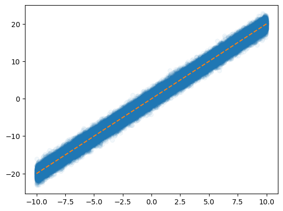
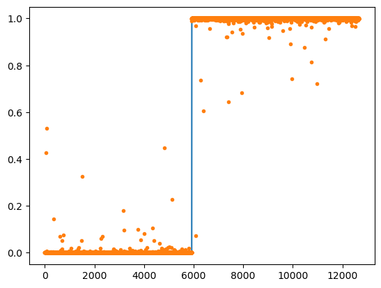
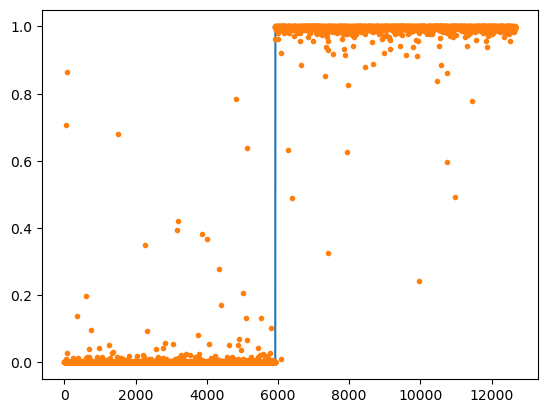
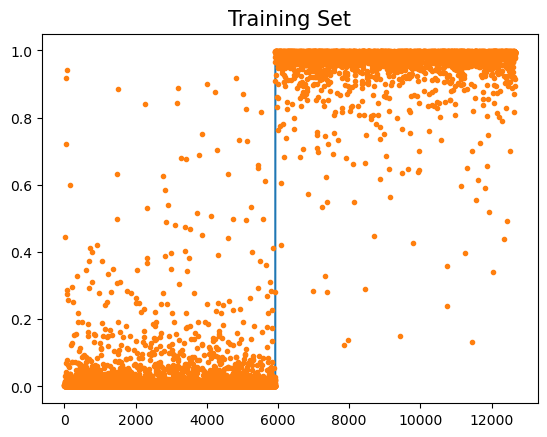
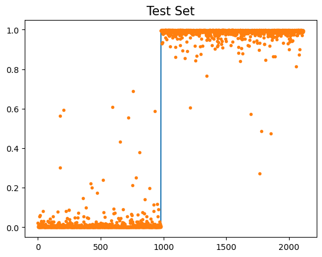
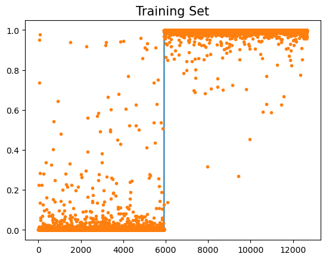

import torch
import matplotlib.pyplot as plt
from fastai.data.all import *
import torchvisionDeep Learning 2
1. Imports
2. Layer의 수
학습 가능한 파라메터가 몇 층으로 있는지 즉, Linear(???,???)가 몇 개 있는지 센다
- hidden layer의 수
hidden layer의 수는 layer의 수 -1이다
- 예제
예시1 – 2층 (히든레이어는 1층)
torch.nn.Sequential( torch.nn.Linear(??,??), ## <– 학습해야할 가중치가 있는 층 torch.nn.ReLU(), torch.nn.Linear(??,??), ## <– 학습해야할 가중치가 있는 층 )
예시2 – 2층 (히든레이어는 1층)
torch.nn.Sequential( torch.nn.Linear(??,??), ## <– 학습해야할 가중치가 있는 층 torch.nn.ReLU(), torch.nn.Linear(??,??), ## <– 학습해야할 가중치가 있는 층 torch.nn.Sigmoid(), )
예시3 – 1층 (히든레이어는 없음!!)
torch.nn.Sequential( torch.nn.Linear(??,??), ## <– 학습해야할 가중치가 있는 층 )
예시4 – 1층 (히든레이어는 없음!!)
torch.nn.Sequential( torch.nn.Linear(??,??), ## <– 학습해야할 가중치가 있는 층 torch.nn.Sigmoid() )
예시5 – 3층 (히든레이어는 2층)
torch.nn.Sequential( torch.nn.Linear(??,??), ## <– 학습해야할 가중치가 있는 층 torch.nn.Sigmoid() torch.nn.Linear(??,??), ## <– 학습해야할 가중치가 있는 층 torch.nn.Sigmoid() torch.nn.Linear(??,??), ## <– 학습해야할 가중치가 있는 층
)
예시6 – 3층 (히든레이어는 2층)
torch.nn.Sequential( torch.nn.Linear(??,??), ## <– 학습해야할 가중치가 있는 층 torch.nn.ReLU() torch.nn.Dropout(??) torch.nn.Linear(??,??), ## <– 학습해야할 가중치가 있는 층 torch.nn.ReLU() torch.nn.Dropout(??) torch.nn.Linear(??,??), ## <– 학습해야할 가중치가 있는 층
torch.nn.Sigmoid() )
3. 다이어그램 그림을 보고 코드로 구현하기 (중요)

- 위의 그림을 보고 net을 짜라
net = torch.nn.Sequential( torch.nn.Linear(12828,32), torch.nn.ReLU(), torch.nn.Linear(32,1), torch.nn.Sigmoid() )

net = torch.nn.Sequential( torch.nn.Linear(12828,128), torch.nn.ReLU(), torch.nn.Linear(128,64), torch.nn.ReLU(), torch.nn.Linear(64,10), # torch.nn.Softmax() )
loss_fn = torch.nn.CrossEntropyLoss()
4. CPU vs GPU
- CPU (512 nodes)
import timetorch.manual_seed(5)
x = torch.linspace(0,1,100).reshape(-1,1)
y = torch.randn(100).reshape(-1,1)*0.01
net = torch.nn.Sequential(
torch.nn.Linear(1,512),
torch.nn.ReLU(),
torch.nn.Linear(512,1),
)
loss_fn = torch.nn.MSELoss()
optimizr = torch.optim.Adam(net.parameters())
t1 = time.time()
for epoc in range(1000):
yhat = net(x)
loss = loss_fn(yhat,y)
loss.backward()
optimizr.step()
optimizr.zero_grad()
t2 = time.time()
t2 - t11.4660861492156982- GPU (512 nodes)
torch.manual_seed(5)
x = torch.linspace(0,1,100).reshape(-1,1)
y = torch.randn(100).reshape(-1,1)*0.01
net = torch.nn.Sequential(
torch.nn.Linear(1,512),
torch.nn.ReLU(),
torch.nn.Linear(512,1),
).to("cuda:0")
loss_fn = torch.nn.MSELoss()
optimizr = torch.optim.Adam(net.parameters())
t1 = time.time()
for epoc in range(1000):
yhat = net(x.to("cuda:0"))
loss = loss_fn(yhat.to("cuda:0"),y.to("cuda:0"))
loss.backward()
optimizr.step()
optimizr.zero_grad()
t2 = time.time()
t2 - t11.705209732055664? CPU가 더 빠르다?
`-` CPU torch.manual_seed(5)
x = torch.linspace(0,1,100).reshape(-1,1)
y = torch.randn(100).reshape(-1,1)*0.01
net = torch.nn.Sequential(
torch.nn.Linear(1,204800),
torch.nn.ReLU(),
torch.nn.Linear(204800,1),
)
loss_fn = torch.nn.MSELoss()
optimizr = torch.optim.Adam(net.parameters())
t1 = time.time()
for epoc in range(1000):
yhat = net(x)
loss = loss_fn(yhat,y)
loss.backward()
optimizr.step()
optimizr.zero_grad()
t2 = time.time()
t2 - t189.38723254203796- GPU (204800)
torch.manual_seed(5)
x = torch.linspace(0,1,100).reshape(-1,1)
y = torch.randn(100).reshape(-1,1)*0.01
net = torch.nn.Sequential(
torch.nn.Linear(1,204800),
torch.nn.ReLU(),
torch.nn.Linear(204800,1),
).to("cuda:0")
loss_fn = torch.nn.MSELoss()
optimizr = torch.optim.Adam(net.parameters())
t1 = time.time()
for epoc in range(1000):
yhat = net(x.to("cuda:0"))
loss = loss_fn(yhat.to("cuda:0"),y.to("cuda:0"))
loss.backward()
optimizr.step()
optimizr.zero_grad()
t2 = time.time()
t2 - t11.15846729278564454.’확률적’ 경사하강법
- 그럼 GPU로 다 쓰면 되는 거 아닌가?
그러기엔 GPU가 너무 비싸다… 80GB에 3000만원씩 하기때문…
그럼 GPU메모리를 어떻게든 아껴서 잘 사용해야하네? 80GB는 금방 차버리니까
어떻게 해야할까?
x = torch.linspace(-10,10,100000).reshape(-1,1)
eps = torch.randn(100000).reshape(-1,1)
y = x*2 + eps plt.plot(x,y,'o',alpha=0.05)
plt.plot(x,2*x,'--')
10만개의 데이터를 모두 GPU로 보내서 연산시키면 너무 낭비라는 생각이 듦…
그렇게 어려운 계산도 아닌데
A. X,y 데이터를 모두 굳이 GPU에 넘겨야 하는가?
데이터셋을 짝홀로 나누어서 번갈아가면서 GPU에 올렸다 내렸다하면 안되나?
- 아래의 알고리즘을 생각해보자.
- 데이터를 반으로 나누고
- 짝수 obs의 x,y,net의 모든 parameters을 GPU에 올린다
- yhat,loss,grad,update 수행
- 홀수 obs의 x,y를 GPU메모리에서 내린다. 그리고 짝수 obs의 x,y를 GPU메모리에 올린다
- yhat,loss,grad,update 수행
- 반복
B. 미니배치 경사하강법
그럼 홀수 짝수로 나누는 건 2로 나누는 건데 굳이 2로만 나누어야하나? 더 쪼갤 수 있지 않나?
- gradient descent : 10개의 sample data가 있다고 할 때 모든 sample을 이용하여 slope계산
- stochastic gradient descent with batch size = 1 : 10개의 smaple data를 하나씩으로 모두 쪼개서 slope계산
stochastic gradient descent with batch size = 1의 경우는 epoc을 10번 하면 총 100번 epoc을 돌리는 것과 같다
- stochastic gradient descent : m개의 sample을 이용하여 slope 계산
그럼 stochastic gradient descent의 경우는 epoc을 10번 하면 총 40번 epoc을 돌리는 것과 같다.
C. Dataset(ds) , DataLoader(dl)
stochastic gradient descent를 수행하기 위해서 파이토치에서는 ds와 dl라는 오브젝트를 준비했다.
x=torch.tensor(range(10)).float().reshape(-1,1)
y=torch.tensor([1.0]*5+[0.0]*5).reshape(-1,1)
torch.concat([x,y],axis=1)tensor([[0., 1.],
[1., 1.],
[2., 1.],
[3., 1.],
[4., 1.],
[5., 0.],
[6., 0.],
[7., 0.],
[8., 0.],
[9., 0.]])ds = torch.utils.data.TensorDataset(x,y)dir(ds)를 살펴보면 __getitem__이 있다 이러면 섭스크립터블하다는 것이다.
ds.tensors # 튜플 언패킹으로 뽑을 수 있을 거 같음(tensor([[0.],
[1.],
[2.],
[3.],
[4.],
[5.],
[6.],
[7.],
[8.],
[9.]]),
tensor([[1.],
[1.],
[1.],
[1.],
[1.],
[0.],
[0.],
[0.],
[0.],
[0.]]))ds[0] , (x,y)[0]((tensor([0.]), tensor([1.])),
tensor([[0.],
[1.],
[2.],
[3.],
[4.],
[5.],
[6.],
[7.],
[8.],
[9.]]))그런데 일반적인 튜플의 인덱싱과는 다르게 동작함
dl=torch.utils.data.DataLoader(ds,batch_size=3)
dl<torch.utils.data.dataloader.DataLoader at 0x7fdf9fc2fec0>dl : 섭스크립터블하지 않지만 이터러블 함 즉, for문을 사용할 수 있음
for xi,yi in dl:
print(xi,yi)tensor([[0.],
[1.],
[2.]]) tensor([[1.],
[1.],
[1.]])
tensor([[3.],
[4.],
[5.]]) tensor([[1.],
[1.],
[0.]])
tensor([[6.],
[7.],
[8.]]) tensor([[0.],
[0.],
[0.]])
tensor([[9.]]) tensor([[0.]])10을 3으로 나누면 마지막에 하나 남는데 그건 어떻게 해? -> 그냥 하나 남으면 그것만 계산한다
D. ds,dl을 이용한 MNIST구현
- 목표 : 확률적경사하강법과 그냥 경사하강법의 성능을 ’동일 반복횟수’로 비교해보자
- 그냥 경사하강법 - mini-batch쓰지 않는 학습
path = untar_data(URLs.MNIST)
X0 = torch.stack(([torchvision.io.read_image(str(fname)) for fname in (path/'training/0').ls()]))
X1 = torch.stack(([torchvision.io.read_image(str(fname)) for fname in (path/'training/1').ls()]))
X = torch.concat([X0,X1],axis=0).reshape(-1,1*28*28)/255
y = torch.tensor([0.0]*len(X0) + [1.0]*len(X1)).reshape(-1,1)
torch.manual_seed(21345)
net = torch.nn.Sequential(
torch.nn.Linear(1*28*28,32),
torch.nn.ReLU(),
torch.nn.Linear(32,1),
torch.nn.Sigmoid()
)
loss_fn = torch.nn.BCELoss()
optimizr = torch.optim.Adam(net.parameters())
for epoc in range(700):
yhat = net(X)
loss = loss_fn(yhat,y)
loss.backward()
optimizr.step()
optimizr.zero_grad()
((yhat > 0.5)*1.0 == y).float().mean()tensor(0.9998)plt.plot(y)
plt.plot(yhat.data,'.')
- ‘확률적’ 경사하강법 - mini-batch사용하는 학습
ds = torch.utils.data.TensorDataset(X,y)
dl = torch.utils.data.DataLoader(ds,batch_size=2048)
path = untar_data(URLs.MNIST)
X0 = torch.stack(([torchvision.io.read_image(str(fname)) for fname in (path/'training/0').ls()]))
X1 = torch.stack(([torchvision.io.read_image(str(fname)) for fname in (path/'training/1').ls()]))
X = torch.concat([X0,X1],axis=0).reshape(-1,1*28*28)/255
y = torch.tensor([0.0]*len(X0) + [1.0]*len(X1)).reshape(-1,1)
torch.manual_seed(21345)
net = torch.nn.Sequential(
torch.nn.Linear(1*28*28,32),
torch.nn.ReLU(),
torch.nn.Linear(32,1),
torch.nn.Sigmoid()
)
loss_fn = torch.nn.BCELoss()
optimizr = torch.optim.Adam(net.parameters())
for epoc in range(100):
for xi,yi in dl:
netout = net(xi)
loss = loss_fn(netout,yi)
loss.backward()
optimizr.step()
optimizr.zero_grad()
((net(X) > 0.5)*1.0 == y).float().mean()tensor(0.9992)plt.plot(y)
plt.plot(yhat.data,'.')
- GPU를 활용하는 ‘확률적’ 경사하강법 - 실제로는 이게 최종 알고리즘
ds = torch.utils.data.TensorDataset(X,y)
dl = torch.utils.data.DataLoader(ds,batch_size=2048)
path = untar_data(URLs.MNIST)
X0 = torch.stack(([torchvision.io.read_image(str(fname)) for fname in (path/'training/0').ls()]))
X1 = torch.stack(([torchvision.io.read_image(str(fname)) for fname in (path/'training/1').ls()]))
X = torch.concat([X0,X1],axis=0).reshape(-1,1*28*28)/255
y = torch.tensor([0.0]*len(X0) + [1.0]*len(X1)).reshape(-1,1)
torch.manual_seed(21345)
net = torch.nn.Sequential(
torch.nn.Linear(1*28*28,32),
torch.nn.ReLU(),
torch.nn.Linear(32,1),
torch.nn.Sigmoid()
).to("cuda:0")
loss_fn = torch.nn.BCELoss()
optimizr = torch.optim.Adam(net.parameters())
for epoc in range(100):
for xi,yi in dl:
loss = loss_fn(net(xi.to("cuda:0")),yi.to("cuda:0"))
loss.backward()
optimizr.step()
optimizr.zero_grad()
net.to("cpu")
((net(X) > 0.5)*1.0 == y).float().mean()tensor(0.9992)plt.plot(y)
plt.plot(net(X).data.data,'.')
5. 다중클래스 분류
A. 결론(그냥 외워)
- 2개의 class를 구분하는 게 아니라 k개의 class를 구분해야 한다면?
y의 형태 : (n,) vector + int형 // (n,k) one-hot encoded matrix + float형
손실함수 : torch.nn.BCEWithLogitsLoss, -> torch.nn.CrossEntropyLoss
마지막층의 선형변환 : torch.nn.Linear(?,1) -> torch.nn.Linear(?,k)
마지막층의 활성화 : NONE -> NONE (손실함수에 이미 포함되어있음)
B. 실습 : 3개의 클래스를 구분
- 1. 통계는 잘하는데 파이토치를 못하는 사람의 코드
## Step1: 데이터준비
path = untar_data(URLs.MNIST)
X0 = torch.stack([torchvision.io.read_image(str(fname)) for fname in (path/'training/0').ls()])
X1 = torch.stack([torchvision.io.read_image(str(fname)) for fname in (path/'training/1').ls()])
X2 = torch.stack([torchvision.io.read_image(str(fname)) for fname in (path/'training/2').ls()])
X = torch.concat([X0,X1,X2]).reshape(-1,1*28*28)/255
y = torch.nn.functional.one_hot(torch.tensor([0]*len(X0) + [1]*len(X1)+ [2]*len(X2))).float()
## Step2: 학습가능한 오브젝트 생성
torch.manual_seed(43052)
net = torch.nn.Sequential(
torch.nn.Linear(784,32),
torch.nn.ReLU(),
torch.nn.Linear(32,3),
# torch.nn.Softmax()
)
loss_fn = torch.nn.CrossEntropyLoss()
optimizr = torch.optim.Adam(net.parameters())
## Step3: 적합
for epoc in range(100):
## step1
netout = net(X)
## step2
loss = loss_fn(netout,y)
## step3
loss.backward()
## step4
optimizr.step()
optimizr.zero_grad()
## Step4: 적합 (혹은 적합결과확인)
(netout.argmax(axis=1) == y.argmax(axis=1)).float().mean()tensor(0.9827)- 2. 파이토치를 잘하는 사람의 코드
## Step1: 데이터준비
path = untar_data(URLs.MNIST)
X0 = torch.stack([torchvision.io.read_image(str(fname)) for fname in (path/'training/0').ls()])
X1 = torch.stack([torchvision.io.read_image(str(fname)) for fname in (path/'training/1').ls()])
X2 = torch.stack([torchvision.io.read_image(str(fname)) for fname in (path/'training/2').ls()])
X = torch.concat([X0,X1,X2]).reshape(-1,1*28*28)/255
#y = torch.nn.functional.one_hot(torch.tensor([0]*len(X0) + [1]*len(X1)+ [2]*len(X2))).float()
y = torch.tensor([0]*len(X0) + [1]*len(X1)+ [2]*len(X2))
## Step2: 학습가능한 오브젝트 생성
torch.manual_seed(43052)
net = torch.nn.Sequential(
torch.nn.Linear(784,32),
torch.nn.ReLU(),
torch.nn.Linear(32,3),
# torch.nn.Softmax()
)
loss_fn = torch.nn.CrossEntropyLoss()
optimizr = torch.optim.Adam(net.parameters())
## Step3: 적합
for epoc in range(100):
## step1
netout = net(X)
## step2
loss = loss_fn(netout,y)
## step3
loss.backward()
## step4
optimizr.step()
optimizr.zero_grad()
## Step4: 적합 (혹은 적합결과확인)
(netout.argmax(axis=1) == y).float().mean()tensor(0.9827)파이토치에서 CrossEntropyLoss를 사용하면 one-hot 인코딩을 해준다. float형도 자동으로 맞춰줌
C. Softmax
net(X)tensor([[ 5.3554, -6.5855, -1.3154],
[ 3.2968, -4.6176, -1.0703],
[ 3.6498, -5.2716, -0.0403],
...,
[-2.0524, -2.4955, 5.2198],
[-1.7430, -4.0844, 5.5187],
[-0.9800, -3.7222, 4.6707]], grad_fn=<AddmmBackward0>)Softmax는 숫자 하나하나에 접근해서 Sigmoid를 취해주는 것
D.정리
- 결론
- 소프트맥스는 시그모이드의 확장이다.
- 클래스의 수가 2개일 경우에는 (Sigmoid, BCEloss) 조합을 사용해야 하고 클래스의 수가 2개보다 클 경우에는 (Softmax, CrossEntropyLoss) 를 사용해야 한다.
- 그런데 사실.. 클래스의 수가 2개일 경우일때 (Softmax, CrossEntropyLoss)를 사용해도 그렇게 큰일나는것은 아니다. (그냥 좀 비효율적인 느낌이 드는 것 뿐임. 흑백이미지를 칼라잉크로 출력하는 느낌)
6. CNN 예비학습
\(l_1\) : 선형변환 , feature를 뽑아내는 역할 (뻥튀기)
\(relu\) : 뻥튀기된 feature에 비선형을 추가하여 표현력을 극대화
\(l_2\) : 선형변환, 뻥튀기된 feature를 요약하는 역할 (=데이터를 요약하는 역할)
\(conv\) : feature를 뽑아내는 역할 (2d ver \(l_1\) 느낌)
\(relu\)
\(pooling\) : 데이터를 요약하는 역할
A. torch.nn.Conv2d
torch.manual_seed(21345)
conv = torch.nn.Conv2d(1,1,(2,2)) # 입력1, 출력1, (2,2) window size
conv.weight.data, conv.bias.data(tensor([[[[0.4293, 0.0457],
[0.4325, 0.1950]]]]),
tensor([0.0321]))_X = torch.arange(0,4).reshape(1,1,2,2).float() # 2,2 흑백이미지.
_Xtensor([[[[0., 1.],
[2., 3.]]]])0.4293 * 0 + 0.0457 * 1 + 0.4325 * 2 + 0.1950 * 3 + 0.0321 , conv(_X)(1.5277999999999998, tensor([[[[1.5278]]]], grad_fn=<ConvolutionBackward0>))- feature 뻥튀기
_X = torch.arange(32).reshape(2,1,4,4).float()
conv = torch.nn.Conv2d(1,16,(3,3)) _X.shape,conv(_X).shape(torch.Size([2, 1, 4, 4]), torch.Size([2, 16, 2, 2]))괄호 안에 2번째 수를 높이면 뻥튀기가 된다
B. torch.nn.ReLU()
a1 = torch.nn.ReLU()
_X = torch.randn(25).reshape(1,1,5,5)
_X,a1(_X)(tensor([[[[ 0.6092, -0.4852, 0.4315, 0.3735, -1.0661],
[-0.0087, -0.8282, 0.5311, 1.3330, 1.6749],
[ 0.0381, -0.7604, -0.0393, -0.0930, -0.2515],
[-1.4267, 0.7906, 2.4239, -0.7960, -0.0814],
[ 0.2651, 0.7082, -0.0816, -1.0088, -0.9553]]]]),
tensor([[[[0.6092, 0.0000, 0.4315, 0.3735, 0.0000],
[0.0000, 0.0000, 0.5311, 1.3330, 1.6749],
[0.0381, 0.0000, 0.0000, 0.0000, 0.0000],
[0.0000, 0.7906, 2.4239, 0.0000, 0.0000],
[0.2651, 0.7082, 0.0000, 0.0000, 0.0000]]]]))음수인 수를 다 0으로 만든다
C. torch.nn.MaxPood2d
m1 = torch.nn.MaxPool2d((2,2))
_X = torch.randn(25).reshape(1,1,5,5)
_X,m1(_X)(tensor([[[[-0.1029, -0.7286, 0.9365, 0.4678, 0.6776],
[-0.7395, -0.7937, 0.8509, -0.1291, 2.2427],
[ 0.7738, -0.4895, 0.8041, 1.4233, 0.5733],
[ 0.7792, -0.4096, -1.5089, 0.3478, 1.1201],
[ 1.2056, 0.1269, -1.3804, -0.4759, 2.2051]]]]),
tensor([[[[-0.1029, 0.9365],
[ 0.7792, 1.4233]]]]))feature들을 요약하는 느낌
7. MNIST(CPU)
- training set
X0 = torch.stack([torchvision.io.read_image(str(fname)) for fname in (path/'training/0').ls()])
X1 = torch.stack([torchvision.io.read_image(str(fname)) for fname in (path/'training/1').ls()])
X = torch.concat([X0,X1])/255
y = torch.tensor([0.0]*len(X0) + [1.0]*len(X1)).reshape(-1,1)- test set
X0 = torch.stack([torchvision.io.read_image(str(fname)) for fname in (path/'testing/0').ls()])
X1 = torch.stack([torchvision.io.read_image(str(fname)) for fname in (path/'testing/1').ls()])
XX = torch.concat([X0,X1])/255
yy = torch.tensor([0.0]*len(X0) + [1.0]*len(X1)).reshape(-1,1)X.shape,XX.shape,y.shape,yy.shape(torch.Size([12665, 1, 28, 28]),
torch.Size([2115, 1, 28, 28]),
torch.Size([12665, 1]),
torch.Size([2115, 1]))c1 = torch.nn.Conv2d(1,16,(5,5))
a1 = torch.nn.ReLU()
m1 = torch.nn.MaxPool2d((2,2))
flttn = torch.nn.Flatten()
m1(a1(c1(X))).shapetorch.Size([12665, 16, 12, 12])flttn(m1(a1(c1(X)))).shapetorch.Size([12665, 2304])l1 = torch.nn.Linear(2304,1)
a2 = torch.nn.Sigmoid()
a2(l1(flttn(m1(a1(c1(X)))))).shapetorch.Size([12665, 1])- 학습
net = torch.nn.Sequential(
c1,
a1,
m1,
flttn,
l1,
a2
)
loss_fn = torch.nn.BCELoss()
optimizr = torch.optim.Adam(net.parameters())
for epoc in range(50):
yhat = net(X)
loss = loss_fn(yhat,y)
loss.backward()
optimizr.step()
optimizr.zero_grad()plt.plot(y)
plt.plot(yhat.data,'.')
plt.title('Training Set' , size = 15)Text(0.5, 1.0, 'Training Set')
plt.plot(yy)
plt.plot(net(XX).data,'.')
plt.title('Test Set' , size = 15)Text(0.5, 1.0, 'Test Set')
8. MNIST(GPU)
ds = torch.utils.data.TensorDataset(X,y)
dl = torch.utils.data.DataLoader(ds,batch_size = 128)
net = torch.nn.Sequential(
torch.nn.Conv2d(1,16,(5,5)),
torch.nn.ReLU(),
torch.nn.MaxPool2d((2,2)),
torch.nn.Flatten(),
torch.nn.Linear(2304,1),
torch.nn.Sigmoid()
).to("cuda:0")
loss_fn = torch.nn.BCELoss()
optimizr = torch.optim.Adam(net.parameters())
for epoc in range(5):
for xi,yi in dl:
loss = loss_fn(net(xi.to("cuda:0")),yi.to("cuda:0"))
loss.backward()
optimizr.step()
optimizr.zero_grad()
net.to('cpu')Sequential(
(0): Conv2d(1, 16, kernel_size=(5, 5), stride=(1, 1))
(1): ReLU()
(2): MaxPool2d(kernel_size=(2, 2), stride=(2, 2), padding=0, dilation=1, ceil_mode=False)
(3): Flatten(start_dim=1, end_dim=-1)
(4): Linear(in_features=2304, out_features=1, bias=True)
(5): Sigmoid()
)plt.plot(y)
plt.plot(net(X).data,'.')
plt.title('Training Set',size=15)Text(0.5, 1.0, 'Training Set')
plt.plot(yy)
plt.plot(net(XX).data,'.')
plt.title('Training Set',size=15)Text(0.5, 1.0, 'Training Set')